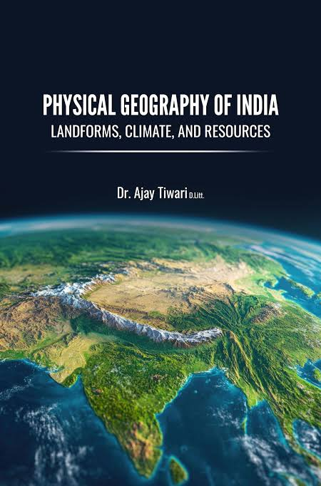

Imagine waking up one morning and hearing that a nearby community has been flooded after heavy rainfall. A few months later, another area is suffering from drought. Why do these things happen? Why do people settle in some places and avoid others? Why are some countries rich in natural resources while others struggle? Questions like these are at the heart of Geography. Geography helps us understand the relationship between people, places, and the environment.
Geography is the study of the Earth, its physical features, human populations, environments, resources, and the interactions between people and their surroundings. It helps us understand both the natural world and how human activities shape it.
As an SHS student, you will study topics such as:
Geography can lead to careers such as:
Many students think Geography is only about maps. It is much more than that. Today, Geography is connected to technology through Geographic Information Systems (GIS), remote sensing, drone mapping, climate science, environmental management, and urban planning. Many of the fastest-growing careers in environmental sustainability and spatial technology have strong roots in Geography.
This is only a small introduction. If you want to understand how programmes connect to university courses, careers, opportunities, and future success, get a copy of:
The guide designed to help students make informed decisions about their future and discover opportunities they may never have considered.